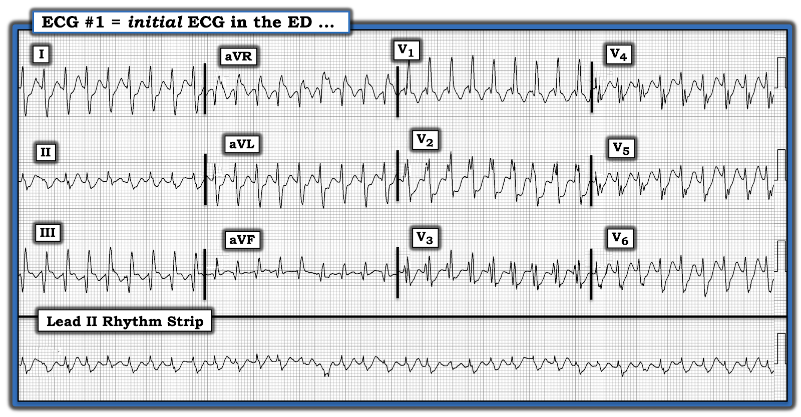
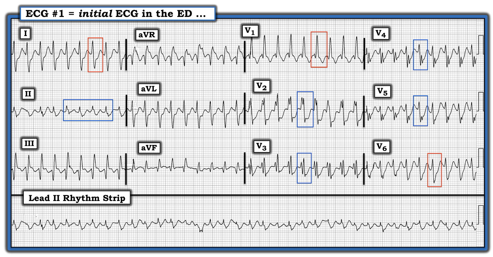
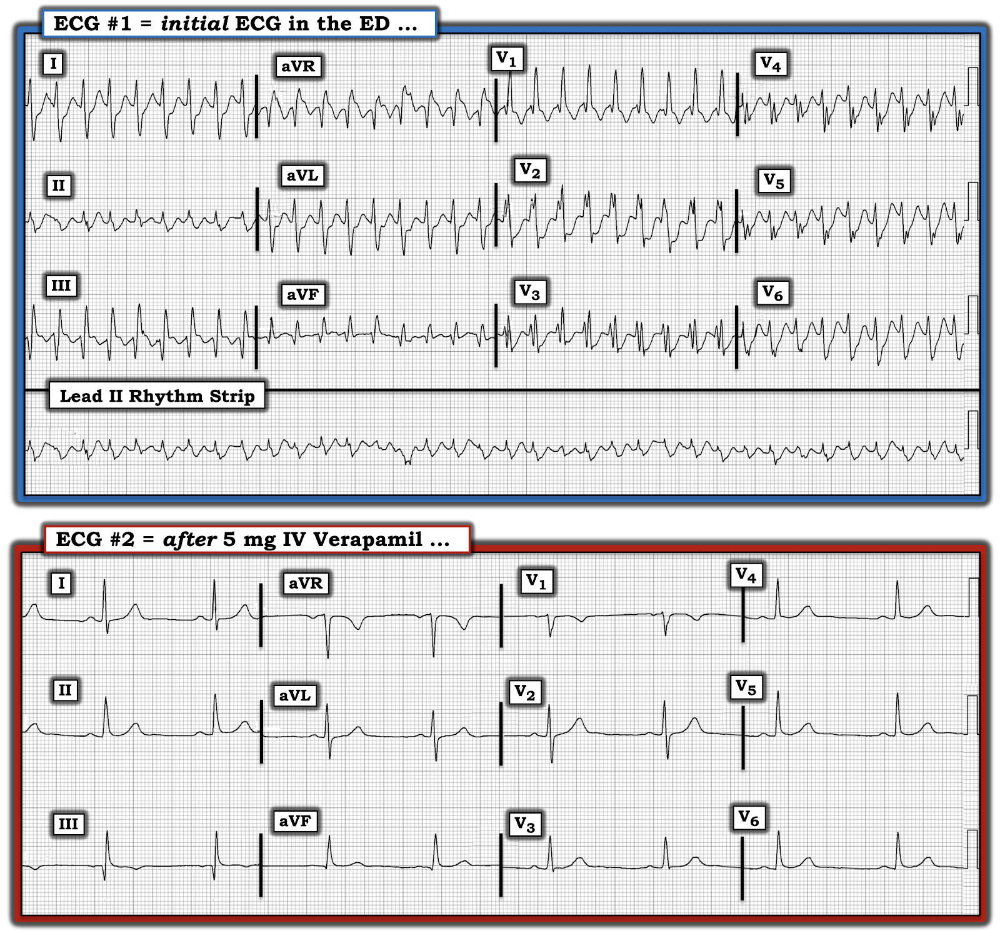

ECG Blog #323 — WCT với hình dạng RBBB
Điện tâm đồ ở Hình-1 — được ghi từ một người đàn ông ở độ tuổi 50, đến ED (khoa cấp cứu – Emergency Department) vì "hồi hộp đánh trống ngực".
- BẠN diễn giải thế nào về điện tâm đồ ở Hình-1?
- Chẳng phải trông giống RBBB (blốc nhánh phải – Right Bundle Branch Block) sao?


SUY NGHĨ CỦA TÔI về điện tâm đồ ở Hình-1:
Hình-1 rõ ràng là một nhịp nhanh với tần số rất nhanh. Thường thì tôi bắt đầu bằng việc đánh giá nhịp trên dải nhịp chuyển đạo II dài nằm ở phía dưới bản ghi. Không may — phức bộ QRS ở chuyển đạo II có biên độ nhỏ, đầy nhiễu, gần như đẳng điện nên việc đánh giá như vậy gặp khó khăn. Dù vậy — hầu như mọi chuyển đạo khác đều cho ta cái nhìn tổng quan sau đây. Dùng Cách tiếp cận Ps, Qs, 3R (Xem ECG Blog #185):
- Nhịp ở điện tâm đồ #1 nhanh và đều (Regular). Tôi ước tính tần số (Rate) vào khoảng ~210/phút.
- Tôi không thấy dấu hiệu nào của hoạt động nhĩ (tức là không có sóng P).
- Phức bộ QRS trong cơn nhịp nhanh rộng (tôi đo được thời gian ~0.12 giây = 3 ô nhỏ).
NHẬN ĐỊNH: Các thông số trên cho phép mô tả nhịp ở Hình-1 là một nhịp nhanh QRS rộng (WCT) ( = Wide-Complex Tachycardia) đều với tần số ~210/phút, không có dấu hiệu rõ ràng của hoạt động nhĩ.
- Như tôi đã nhấn mạnh trong nhiều bài ECG Blog trước đây (đặc biệt là trong ECG Blog #220) — khi gặp một nhịp WCT đều không có dấu hiệu rõ ràng của hoạt động nhĩ, luôn phải mặc định đó là VT cho đến khi chứng minh được điều ngược lại (xác suất thống kê ~90% khi người bệnh là người lớn tuổi có bệnh tim nền).
ĐIỂM THEN CHỐT (PEARL) #1: 90% không phải là 100%! Mặc dù chúng ta cần mặc định là VT với mọi nhịp WCT đều không có sóng P cho đến khi chứng minh được điều ngược lại — đôi khi nhịp đó lại là nhịp trên thất!
- Đánh giá hình dạng QRS giúp ích rất nhiều trong việc thu hẹp khả năng một nhịp WCT cụ thể là hoặc VT hay là một SVT (nhịp nhanh trên thất – SupraVentricular Tachycardia) kèm BBB (blốc nhánh – Bundle Branch Block) có sẵn từ trước hoặc dẫn truyền lệch hướng (Xem ECG Blog #196 để biết chi tiết).
- Khả năng một nhịp WCT là nhịp trên thất tăng lên rất nhiều NẾU — hình dạng QRS phù hợp với một trong các dạng blốc dẫn truyền đã biết (tức là RBBB; LBBB; LAHB hoặc LPHB; hoặc RBBB kèm một trong các blốc phân nhánh).
Hãy NHÌN lại một lần nữa điện tâm đồ ở Hình-1:
- Chẳng phải hình dạng QRS trông giống dẫn truyền RBBB sao?
- Nhịp trong bản ghi này là VT? — hay là SVT kèm dẫn truyền RBBB?


Điện tâm đồ #1: Đây là VT? — hay SVT kèm dẫn truyền RBBB?
Như đã nhấn mạnh ở Pearl #1 — khả năng một nhịp WCT đều hoá ra là nhịp trên thất sẽ tăng lên NẾU — hình dạng QRS phù hợp với một dạng rối loạn dẫn truyền đã biết nào đó.
- Như đã nhấn mạnh trong ECG Blog #204 — 3 chuyển đạo MẤU CHỐT để xác định nhanh BBB là chuyển đạo V1 bên phải — và 2 chuyển đạo I và V6 bên trái. Tôi đã khoanh một phức bộ QRS ở mỗi chuyển đạo trong 3 chuyển đạo này bằng khung chữ nhật ĐỎ ở Hình-2. Hình dạng QRS phù hợp hoàn toàn với dẫn truyền RBBB vì: i) Có phức bộ rsR' ở chuyển đạo V1 (với sóng s đi xuống dưới đường nền — và sóng R' "tai thỏ" bên phải cao hơn); và, ii) Có sóng R dương kèm sóng S cuối rộng ở các chuyển đạo bên I và V6.
ĐIỂM THEN CHỐT (PEARL) #2: Yếu tố còn lại (tinh tế hơn) mà tôi ưa dùng để hỗ trợ xác định khả năng một nhịp WCT đều là VT — là liệu có chuyển đạo nào trong 9 chuyển đạo còn lại cho thấy dấu hiệu trông không điển hình đối với một rối loạn dẫn truyền cụ thể hay không.
- Không có "quy tắc" nào để đánh giá hình dạng QRS khi đánh giá một nhịp WCT đều là hoàn hảo. Luôn có ngoại lệ. Ví dụ — hình dạng QRS có thể đã bị biến đổi rất nhiều trên điện tâm đồ "nền" ở những bệnh nhân có bệnh tim nền đáng kể. Trong những trường hợp như vậy — hình dạng QRS sẽ không trông "điển hình" khi tần số tim tăng lên.
- Dù vậy — tôi đã khoanh trong khung chữ nhật XANH ở Hình-2 một phức bộ QRS đại diện ở 5 chuyển đạo trông bất thường so với dẫn truyền RBBB "điển hình". Cụ thể — i) QRS ở chuyển đạo II trông kỳ quái. Biên độ rất nhỏ, dạng hai pha của nó trông "lạc chỗ" giữa phức bộ RS ở chuyển đạo I và phức bộ rSR' ở chuyển đạo III; và, ii) hình dạng QRS ở các chuyển đạo trước ngực V2,V3,V4 và V5 cũng trông rất bất thường đối với dẫn truyền RBBB — vì các phức bộ nhiều pha (phân mảnh quá mức) trông "lạc chỗ" khi đi sau phức bộ rsR' rất đặc trưng ở chuyển đạo V1.
ĐIỀU CỐT LÕI: Dù không thể loại trừ SVT kèm dẫn truyền RBBB đối với nhịp WCT đều ở Hình-2 — hình dạng bất thường của 5 chuyển đạo nêu trên gợi ý nhịp này là VT.
- Vì hình dạng QRS ở 3 chuyển đạo MẤU CHỐT (I,V1,V6) giống dẫn truyền RBBB — cần mặc định đây là VT phân nhánh (fascicular VT) cho đến khi chứng minh được điều ngược lại.
- ĐIỂM THEN CHỐT (PEARL) #3: Như đã bàn trong ECG Blog #197 — VT phân nhánh là một trong 2 dạng thường gặp nhất của VT vô căn (idiopathic VT), là thuật ngữ dùng để mô tả khoảng 10% tổng số nhịp VT, trong đó bệnh nhân bị VT khi không có bệnh tim cấu trúc nền. Vì vậy, nhận ra VT phân nhánh rất có ý nghĩa lâm sàng — vì diễn tiến, tiên lượng và điều trị của rối loạn nhịp này khác với VT do thiếu máu cục bộ hoặc do sẹo, vốn chiếm 90% số nhịp VT còn lại.
- LƯU Ý: Để nhắc lại — tôi đã đăng lại bên dưới, ở PHẦN BỔ SUNG, Bảng tóm tắt và Pearl Audio về VT vô căn từ Blog #197.
DIỄN TIẾN CỦA CA BỆNH:
Điện tâm đồ ban đầu của ca hôm nay đã được nhận ra là VT phân nhánh — và được điều trị tương ứng. Vì bệnh nhân ổn định huyết động — đã cho 5 mg Verapamil tĩnh mạch. Kết quả điều trị được thể hiện ở điện tâm đồ #2 (Xem Hình-3).


KẾT LUẬN ca bệnh:
Chuyển nhanh về nhịp xoang là đáp ứng điển hình của VT phân nhánh với Verapamil tĩnh mạch ở bệnh nhân không có bệnh tim nền.
- Thăm dò điện sinh lý (EP) đã xác nhận bệnh nhân bị VT phân nhánh trái sau. Ổ này đã được triệt đốt thành công.
==========================================
Lời cảm ơn: Xin cảm ơn Mubarak Al-Hatemi (đến từ Qatar) đã chia sẻ ca bệnh và bản ghi này.
==========================================

==============================
PHẦN BỔ SUNG (31/7/2022):
Tôi tóm tắt các đặc điểm MẤU CHỐT về VT vô căn ở Hình-4.


Hôm nay: ECG Media PEARL #14 (8 phút Audio) — VT vô căn là gì? — TẠI SAO chúng ta cần quan tâm? Đặc biệt chú ý 2 dạng thường gặp nhất = RVOT (đường ra thất phải – Right Ventricular Outflow Track) VT và VT phân nhánh.
==============================
Các bài ECG Blog bổ sung liên quan đến ca hôm nay:
- ECG Blog #185 — Ôn lại Hệ thống của tôi để Đọc nhịp, dùng Cách tiếp cận Ps, Qs & 3R.
- ECG Blog #210 — Ôn lại phương pháp Cách-Một-Nhát (hoặc Cứ-Mỗi-Ba-Nhát) để ước tính tần số tim nhanh — và bàn về một ca khác có nhịp WCT đều.
- ECG Blog #220 — Ôn lại cách tiếp cận WCT đều (nhịp nhanh QRS rộng – Wide-Complex Tachycardia).
- ECG Blog #196 — Ôn lại một ca khác có nhịp WCT đều.
- ECG Blog #204 — Ôn lại chẩn đoán điện tâm đồ các blốc nhánh (RBBB/LBBB/IVCD).
- ECG Blog #203 — Ôn lại chẩn đoán điện tâm đồ về trục và các blốc phân nhánh. Để ôn lại hình dạng QRS trong blốc hai phân nhánh (RBBB/LAHB; RBBB/LPHB) — Xem Video Pearl trong bài này.
- ECG Blog #211 — TẠI SAO xảy ra dẫn truyền lệch hướng?
- ECG Blog #197 — Ôn lại VT phân nhánh (bao gồm Audio Pearl và bảng tóm tắt về VT vô căn).
- ECG Blog #301 — Ôn lại một ca WCT là nhịp TRÊN THẤT! (với RẤT NHIỀU nội dung về dẫn truyền lệch hướng).
- ECG Blog #38 và Blog #85 — Ôn lại VT phân nhánh.
- ECG Blog #278 — Một ca khác có nhịp WCT đều ở người trưởng thành trẻ tuổi hơn.
- ECG Blog #35 — Ôn lại VT đường ra thất phải (RVOT).
- ECG Blog #42 — Ôn lại toàn diện các tiêu chuẩn phân biệt VT với dẫn truyền lệch hướng.